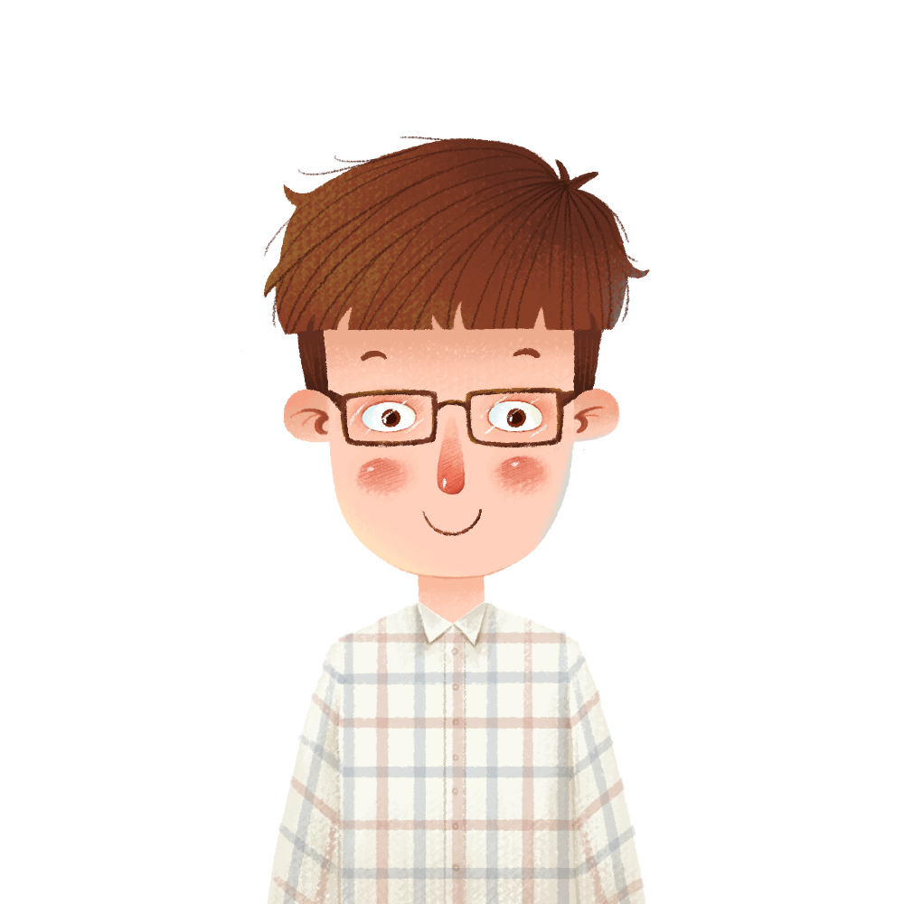

<!--
  Generated template for the InfoPage page.

  See http://ionicframework.com/docs/components/#navigation for more info on
  Ionic pages and navigation.
-->

<ion-content>
  <ion-list>
    <div class="uers_info">
      <button ion-button icon-left clear class="back_icon" (click)="back_to()">
        <ion-icon name="arrow-round-back"></ion-icon>
      </button>
      
      <div>{{user.name}}</div>
    </div>

    <form (submit)="editUser()">
      <ion-item>
        <ion-label>头像</ion-label>
        <ion-input  class="text_user"></ion-input>
      </ion-item>
      <ion-item>
        <ion-label>名字</ion-label>
        <ion-input [(ngModel)]="user.name"  name="name"  class="text_user"></ion-input>
      </ion-item>
      <ion-item>
        <ion-label>性别</ion-label>
        <ion-select [(ngModel)]="user.sex" name="sex">
          <ion-option value="1">男</ion-option>
          <ion-option value="0">女</ion-option>
        </ion-select>
      </ion-item>
      <ion-item>
        <ion-label>电话号码</ion-label>
        <ion-input [(ngModel)]="user.phone" name="phone" class="text_user"></ion-input>
      </ion-item>
      <ion-item>
        <ion-label>现住地址</ion-label>
        <ion-input [(ngModel)]="user.address" name="address" class="text_user"></ion-input>
      </ion-item>

      <ion-item no-lines  class="button_itme">
        <p style="margin-right: 5px; color:red;">{{message}}</p>
        <button style="height: 42px;font-size: 20px;"  ion-button  type="submit" color="primary">确认</button>
        <button style="height: 42px;font-size: 20px;"  ion-button (click)="back_to()"  color="primary">返回</button>
      </ion-item>
    </form>

  </ion-list>
</ion-content>
